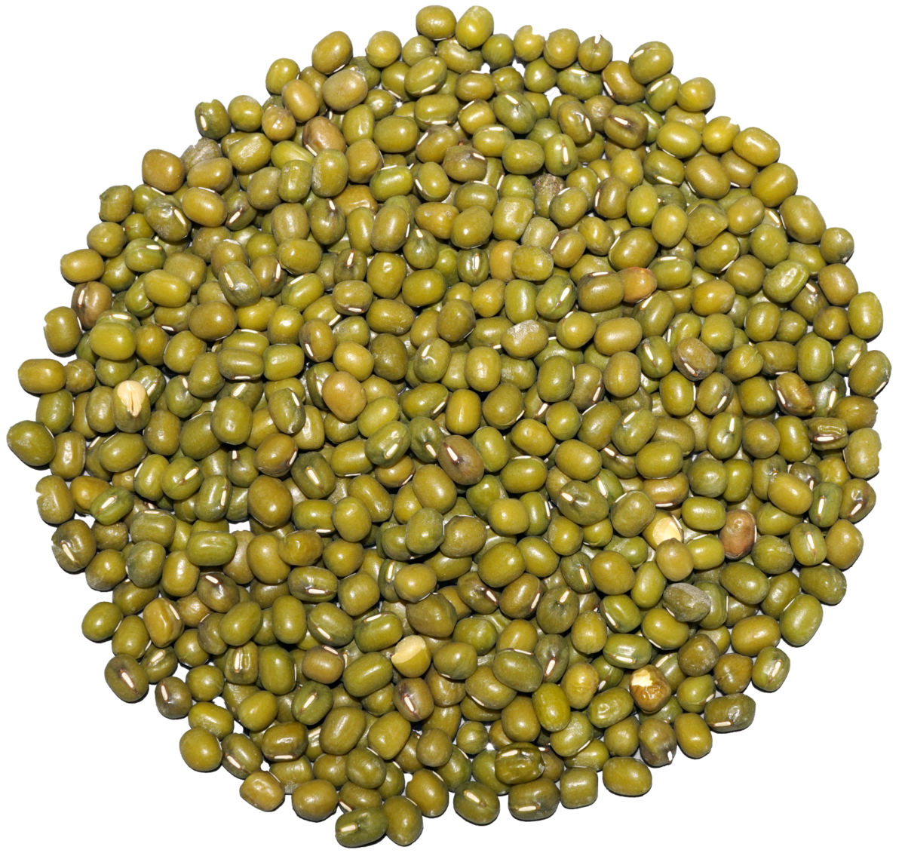

Estas son lentejas. Si quieres las comes, y si no, las dejas.
Ingredientes
500g. de lentejas pardinas extra
4 zanahorias grandes
2 dientes de ajo
2 cebollas grandes
1 hoja de laurel
1 cucharada de pimentón de la Vera
Sal y pimienta negra al gusto
4 cucharadas de aceite de oliva virgen extra
1 pimiento verde
2 tomates grandes
1 hueso de caña
2 chorizos
1 morcilla
1/4 hueso de jamón
Agua

Preparación
Uno de los pasos importantes es la elección de las lentejas. Yo utilizo la más común, la lenteja pardina extra, que se encuentran en cualquier mercado o supermercado.
Echamos las lentejas en un bol con agua fría y las dejamos en remojo, normalmente 12 horas. No es necesario echar sal a la hora del remojo. Las puedes hacer directamente.
Al día siguiente de ponerlas en remojo retiramos las lentejas que estén flotando en el agua, suelen ser no aptas para preparar el guiso. Las escurrimos y apartamos hasta prepararlas.
Picamos la cebolla, el ajo y el pimiento en trozos muy pequeños para que se vayan deshaciendo en la cocción. Al final de la cocción casi no notaremos textura de ninguno de los ingredientes pero sí su sabor. Como el ajo a muchas personas no les gusta encontrarlo en el plato, podéis echarlo entero y retirarlo a mitad de la cocción.
Pelamos las zanahorias y los tomates, si no queréis pelar el tomate tampoco pasa nada, aunque si que encontraréis algún resto de piel. Mucha gente suele picar la zanahoria para que no quede dura en la cocción. En una hora y media queda perfecta, en láminas finas.
En una cazuela, echamos un chorrito de aceite de oliva virgen extra, las cebollas y los dientes de ajo. Sofreímos todo durante 10 minutos para que se mezclen bien los sabores.
Añadimos el pimiento, el tomate, las zanahorias y la hoja de laurel. Sofreímos también durante 2-3 minutos. Añadimos los huesos y una cucharada de pimentón. Removemos con una cuchara y echamos las lentejas. Removemos otra vez para que se junte todo bien.
Dejamos que empiecen a hervir y espumeamos durante unos minutos. Retiramos la espuma que normalmente contiene impurezas, parte de los restos de la carne. Cubrimos con agua fría hasta que quede la cazuela casi llena.
A continuación retiramos los chorizos, la morcilla y los huesos para que queden menos pesadas. La última media hora cocinamos las lentejas a fuego lento.
Cocinaremos unos 12 minutos si es una olla express, o 25 minutos si es normal. Podemos abrirla 5 minutos antes del tiempo para ver cómo están. Si es necesario seguir la cocción.